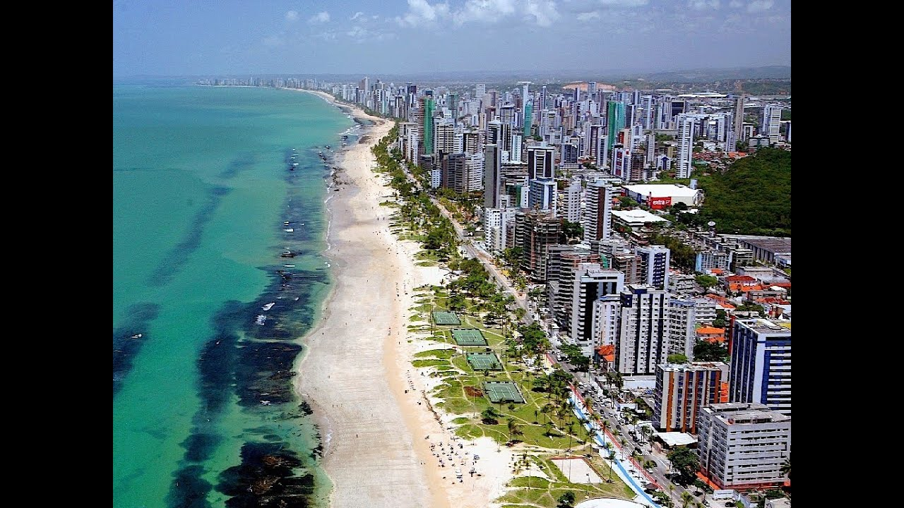

Praia de Boa Viagem
Abaixo segue uma breve apresentação da Praia de Boa Viagem, um dos principais pontos turisticos do Recife/PE
A Praia de Boa Viagem é a praia urbana mais famosa da cidade do Recife, capital do estado brasileiro de Pernambuco.
Com aproximadamente oito quilômetros (8 km) de extensão, está situada no bairro homônimo,
Zona Sul da capital pernambucana, delimitada pela Praia do Pina ao norte e pela Praia de Piedade ao sul.
A maior parte da Praia de Boa Viagem é protegida por uma barreira de recifes naturais, que deu nome à cidade.

Na maré baixa formam-se várias piscinas naturais rasas, com águas mornas e transparentes, ao longo da praia.
Também durante a maré baixa é possível andar sobre os recifes, que são relativamente planos e largos (mas escorregadios).
Quando a maré sobe, os arrecifes ficam completamente cobertos pela água.
Na Praia de Boa Viagem há quiosques padronizados, ciclovia, pista de cooper, chuveiros, quadras de vôlei e tênis e equipamentos para musculação.